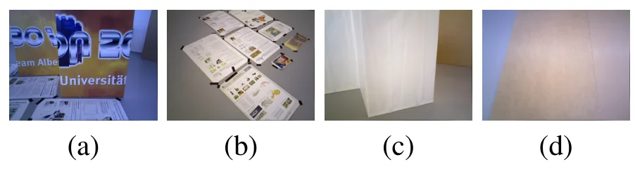
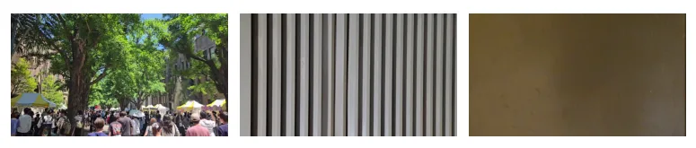
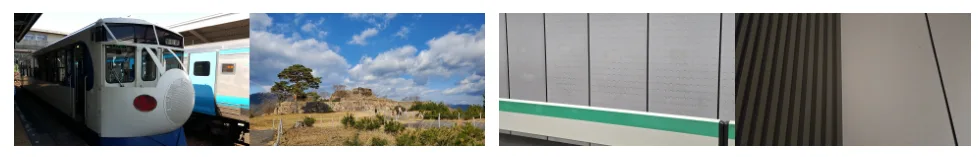
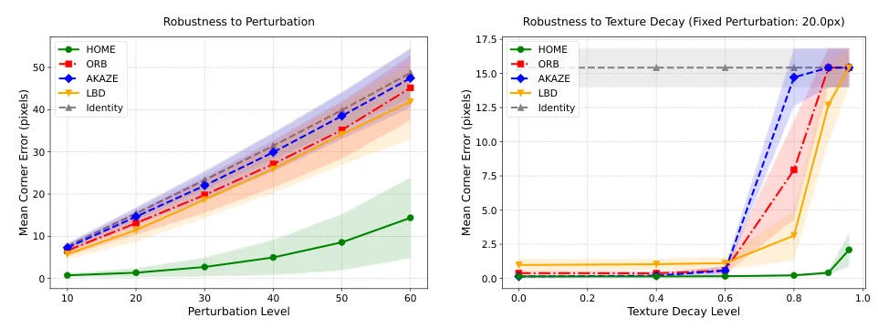
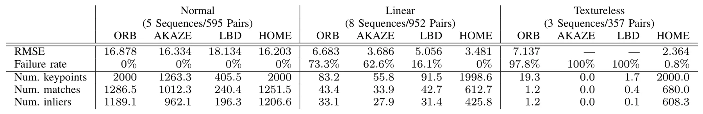
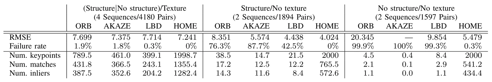
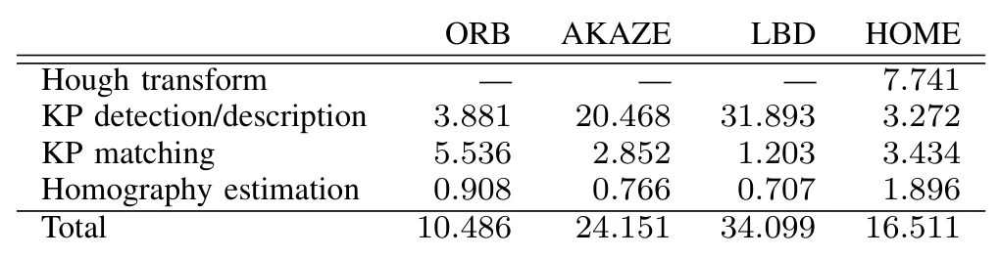

HOME：面向结构化与弱纹理视频的稳健 Hough 空间匹配HOME: Robust Hough-space Matching Method for Structured and Textureless Videos
直接针对 SLAM 前端的结构化/弱纹理退化，表示和匹配方式简洁；当前仅验证 homography，尚无 3D pose、VO 或完整 SLAM 结果。
一句话工作总结
将线结构变为 Hough 空间极值并做一维描述子匹配，为弱纹理实时视觉前端提供轻量、免训练方案。
摘要
点特征前端在强线结构或弱纹理环境中容易失败，而传统 line extraction/description 对 edge robotics 过于昂贵。HOME 将图像变换到 Hough space，把全局线结构映射成稳定 local extrema 并作为 keypoints，从而把复杂 line matching 改写成高效的一维 point matching。其 1D radial descriptor 在无需显式 orientation estimation 时提供旋转和平移不变性。作为 proof of concept，论文目前聚焦 homography estimation；摘要称 HOME 在 point-based methods 失效的场景中保持稳健 registration，并显著快于现有 line-based methods。扩展到 full 3D pose estimation 仍属于未来工作。
Visual front-ends for robotic localization typically rely on point-based features such as Oriented FAST and Rotated BRIEF (ORB), which frequently fail in structured environments dominated by strong linear structures or textureless surfaces. While line-based Simultaneous Localization and Mapping (SLAM) systems mitigate this by utilizing line segments, conventional line extraction and description algorithms are computationally prohibitive for real-time edge robotics. To address this fundamental bottleneck, we propose HOME (Hough-space One-dimensional Matching of Extrema), an ultra-lightweight, training-free feature matching framework. HOME transforms images into Hough space, mapping global linear structures to stable local extrema, which serve as keypoints, thereby reformulating complex line matching into highly efficient one-dimensional point matching. The proposed 1D radial descriptor mathematically guarantees rotational and translational invariance without the overhead of explicit orientation estimation. As a proof of concept to validate the matching accuracy and efficiency of HOME, this paper focuses on homography estimation. Extensive evaluations demonstrate that HOME achieves robust registration in challenging scenarios where point-based methods fail, operating at a much faster speed than existing line-based methods. Extending this robust matching engine to full 3D pose estimation remains a highly promising future direction.
中文解读摘录
图表/页面预览

{kind=link}

{kind=link}

{kind=link}

{kind=link}

{kind=link}

{kind=link}

{kind=link}
